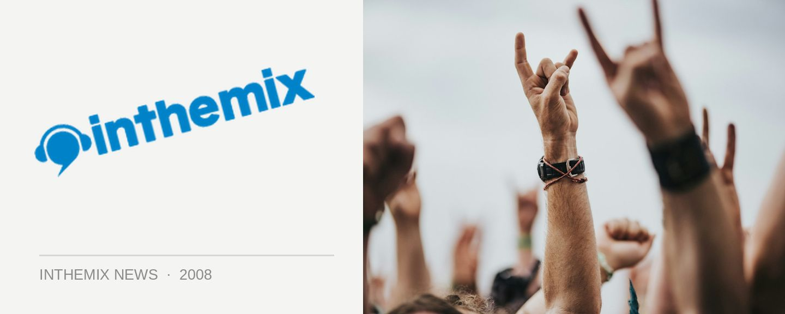

Sensation set times announced!
The biggest addition to the Australian dance music status quo is fast approaching, and what’s more, it’s nearly sold out! ID&T have informed ITM that nearly 35,000 tickets have sold to Sensation’s highly-anticipated debut in Melbourne this NYE, giving every indication that it’s due to sell out extremely soon, with only a handful of general admission tickets and package deals left.
For those of us from right around the country who are already locked to hit the Telstra Dome in Melbourne this NYE, check below for the set times for who’ll we’ll be listening to throughout the evening!
Check out the set times below for Sensation this NYE, and be sure to head to our Sensation Festival Page on inthemix for all the latest news updates, interviews, DJ mixes and videos as the big night approaches…
MAIN ROOM
20:00 – 22:00 Ben Morris
22:00 – 23:30 Erick Morillo
23:30 – 23:55 Grant Smillie & John Course
23.55 – 00:05 NYE moment
00:05 – 01:00 Grant Smillie & John Course
01:00 – 02:30 Fedde le Grand
02:30 – 03:00 ‘The Release’
03:00 – 04:30 Marco V
04:30 – 06:00 TyDi
SIDE
21:30 – 22:30 Ahmet Atasever
22:30 – 23:30 Baby Gee
23:30 – 00:30 Trent McDermott
00:30 – 02:00 Bryan Kearney (IRE)
02:00 – 03:00 Papa Smurf
03:00 – 04:00 Ben Evans
04:00 – 05:00 Dr Willis
DELUXE
22:00 – 23:00 James Rosales
23:00 – 00:00 Paul Morrison (CHILE)
00:00 – 01:00 Timmy Trumpet (NSW)
01:00 – 02:00 Jody McLeod
02:00 – 03:30 Patric la Funk (DE)
03:30 – 05:00 Funkerman (NL)
05:00 – 06:00 Helena
DELUXE 2
22:00 – 23:00 The Cut (NSW)
23:00 – 00:00 KissFM Competition Winner
00:00 – 01:00 Bright White (live)
01:00 – 02:00 Chardy
02:00 – 03:00 Agent86
03:00 – 04:00 Ivan Gough (TV Rock)
04:00 – 05:00 Acid Jacks